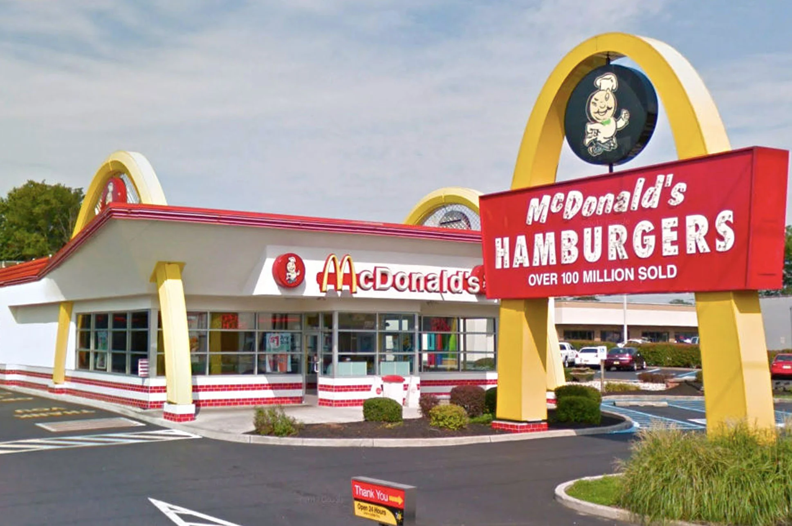

The Big Mac is known worldwide and is often used as a symbol of American capitalism and decadence. The Economist has used it as a reference point for comparing the cost of living in different countries – the Big Mac Index – as it is so widely available and is comparable across markets. This index is sometimes referred to as Burgernomics.[13]
